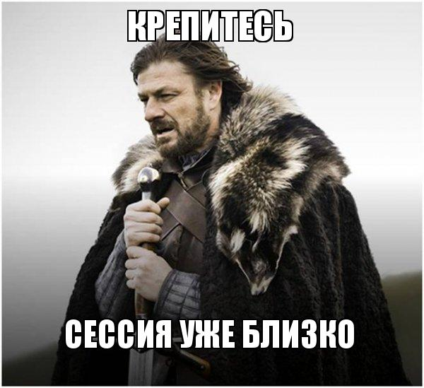
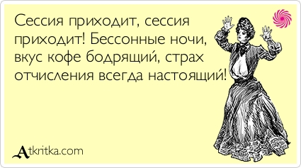
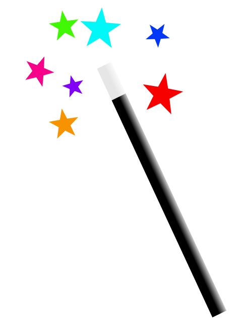

Декабрь
В Декабре,бесспорно,самым захватывающим событием для всех лицеистов является СЕССИЯ. К ней
много готовятся, переживают, но приходит она всегда неожиданно, в самый неподходящий момент. Сессия,
как и любое другое ответсвенное мероприятие, на подобие коллоквиума или зачета, требует тщательную подготовку
и собранность.
Что же можно посоветовать лицеистам, что бы как можно успешнее пережить СЕССИЮ?
Учить. Учить все, а еще лучше учить все
заранее, а не оставлять на потом.

Так как о сессии нужно думать, то на всех парах как можно внимательнее слушать учителей, делать
РАЗБОРЧИВЫЙ конспект, и если что-либо не понятно сразу спрашивать
В период сессии нужно максимально правильно распределять свое время: выделять время на небольшой отдых,
что бы после него максимально концентрироваться на изучении материала
Страться не волноваться и держать себя в руках. Страх делу не поможет, а только
усугубит все ситуацию.
Не создавайте себе проблем - учите материал зарание и добросовестно, и верьте в себя
Добавим чего-то необычного:

>